Lab 4 IMU Sensor
The purpose of this lab was to gain familiarity with IMU sensors, another of the sensors that we will equip our robot with as well beginning the run stunts on our robot.
IMU Setup
The IMU measures angular rate and force/acceleration by an object - we focus on the accelerometer + gyroscope data. I conncected the IMU to the Artemis using a QWICC connector as seen in the image below.
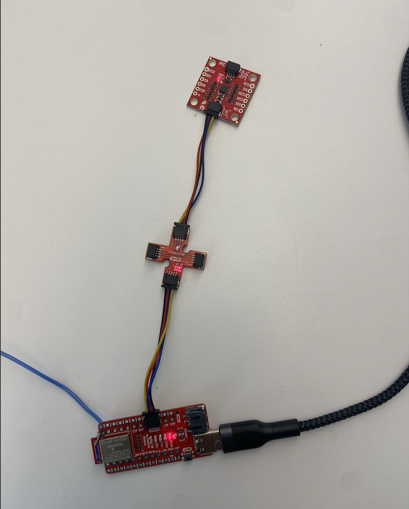
I began by installing the SparkFun 9DOF IMU Breakout - ICM 20948 library and using the Example1_Basics example. This prints out the raw accelerometer and gyroscope values, which can be visualized through the serial plotter. In this example, the AD0_VAL is used to change the address of an IMU if multiple IMU's are used. In this case, we are only using 1 IMU so the AD0_VAL should be set to 1.
When running this example, I noticed that one of the acceleration readings is consistently high - displaying gravity - while the others are close to 0 as seen in the video. The acceleration usually changes with rotation. The gyroscope measures the lateral movement (rotation about the axes), also does not feel the effect of gravity, and is very sensitive to little movements.
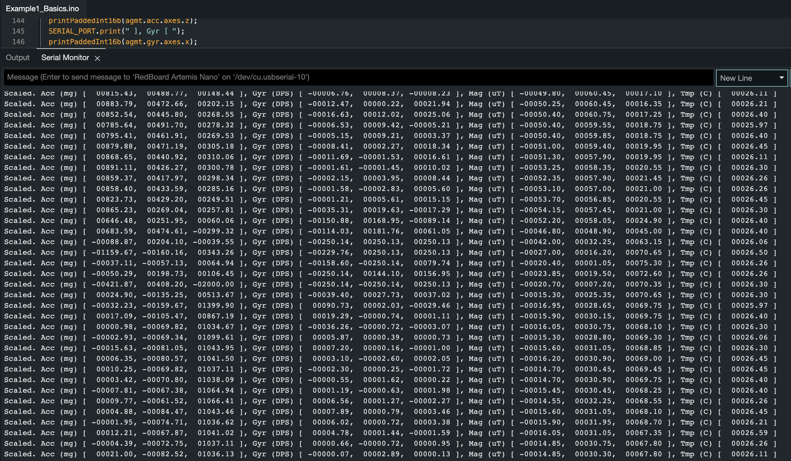
For debugging purposes, I added a visual indicator to see if the board is running/is stuck. It will blink three times if the Artemis has turned on with a slight delay.
ACCELERROMETER
In order to convert the accelerometer data to pitch and roll, I used the sample code from the IMU lecture as a base. Pitch is the rotation around the X axis and roll is the rotation around the Y axis and can be calculated as seen below.
Pitch: θ = atan2(x_accel , z_accel)
Roll: 𝜙 = atan2(y_accel, z_accel)
I then visualized the output at -90, 0, and 90 degrees for pitch and roll.
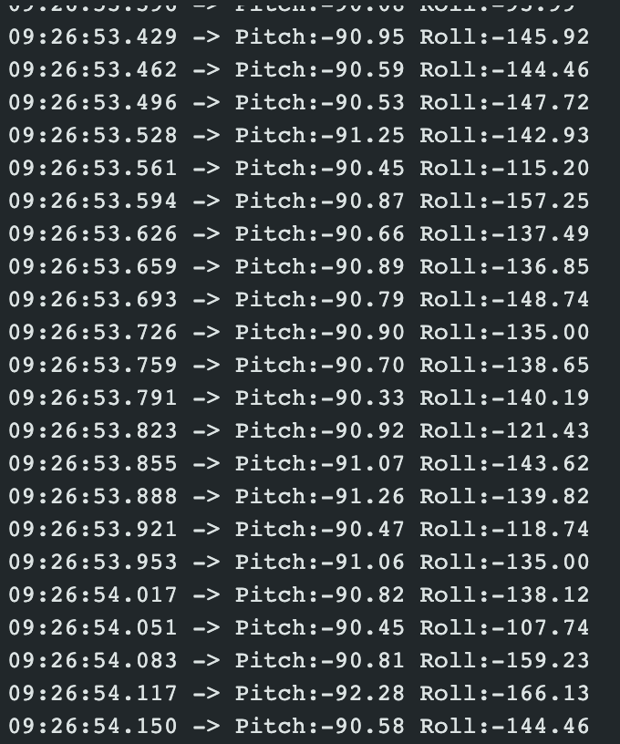
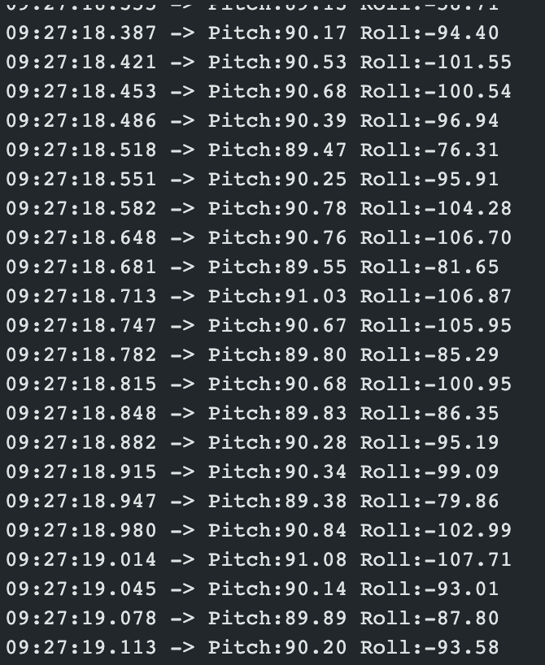
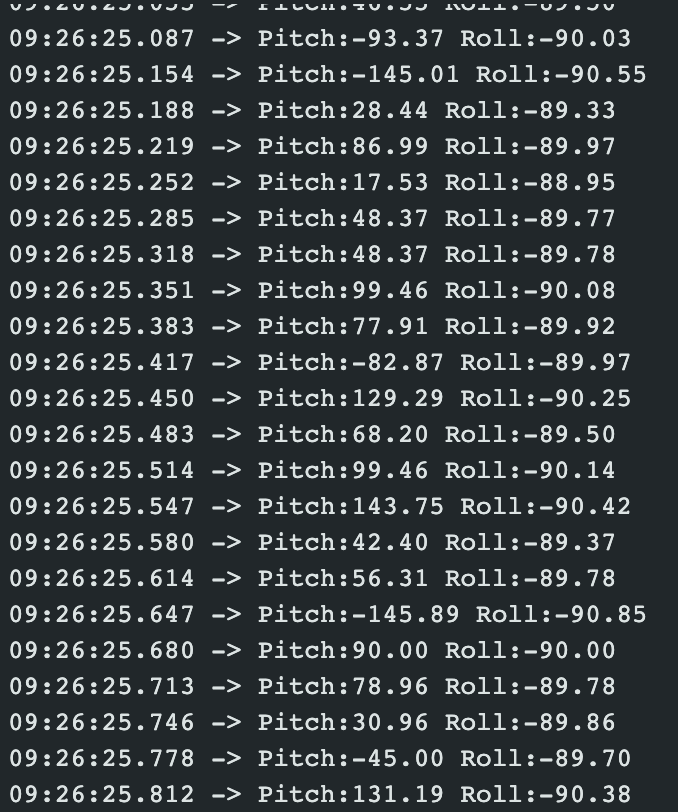
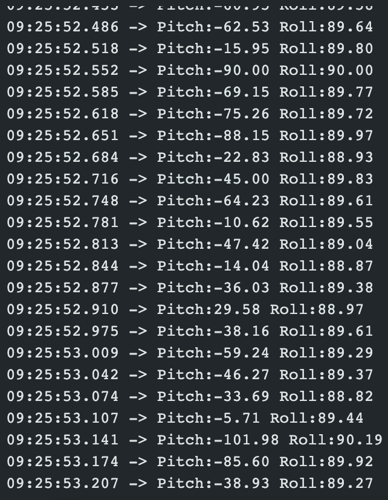
Accelerometer Noise
However, the accelerometer is very noisy, especailly if the RC car is running, because of the noise from the motors. I ran an FFT on that data - resulting in not too much noise. This led me to use a low pas filter to make the accelerometer more sensitive to that noise when it is on the car. The FFT analysis is shown below. Transforming the data from time domain to frequency domain helped show the that the frequency with the most noise was around 0.1 Hz, showing the effect of the low pass filter. Through this, the frequency found was under .1 Hz, illustrating that the noise was reduced.
The first two images are the time and frequency domain of pitch.
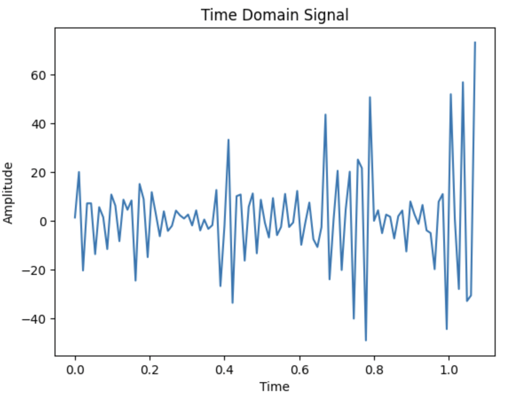
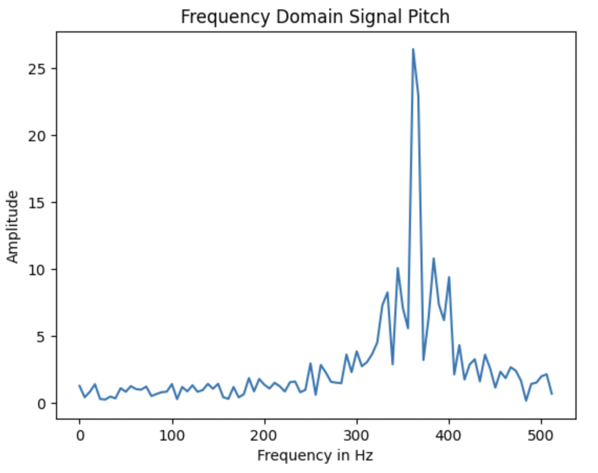
The second two images are the time and frequency domain of roll.
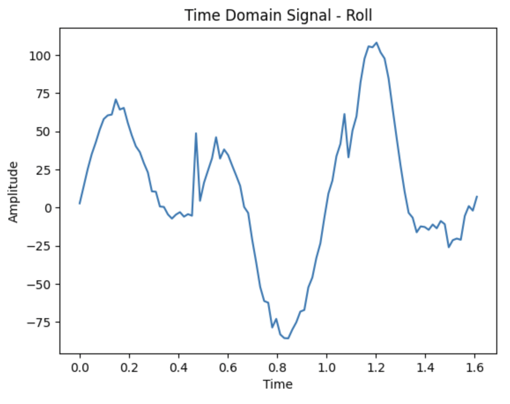
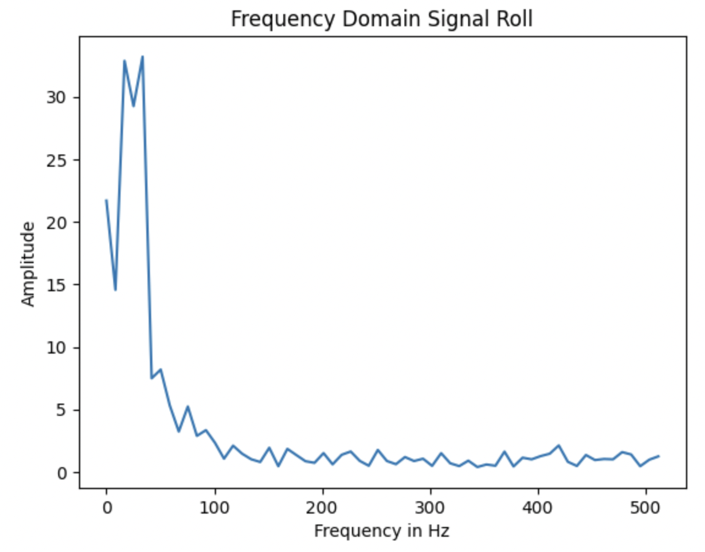
GYROSCOPE
In addition to using the accelerometer, I used a gyroscope to measure the angular rate. I was able to calculate yaw - the rotation around a vertical axis - in addition to pitch and roll. I calculated these measures using these equations:
pitch_g = pitch_g + myICM.gyrX()*dt;
roll_g = roll_g + myICM.gyrY()*dt;
yaw_g = yaw_g + myICM.gyrZ()*dt;
When I rotated the board about either the x, y, or z axis, I could see the yaw, pitch, roll change accordingly.
Complementary Filter
When using the gyroscope, there is an accumulation of error over time while the accelerometer is more susceptible to noise. In order to combine the benefits of both the accelerometer and gyroscope, I implemented a complementary filter using the below equations:
pitch_ga = (pitch+myICM.gyrX()*dt)*0.8 + pitch_a*0.2;
roll_ga = (roll+myICM.gyrY()*dt)*0.8 + roll_a*0.2;
When using the complementary filter, I noticed that I still have some noise because my alpha value was 0.8, as I wanted to get the most accurate readings which came at the cost of noise. My readings became more accurate when implementing the complementary filter as it combined the best parts of using the gyroscope and accelerometer.
Sampling Data
When getting the data from the IMU, I wanted to make sure that we didn't want to wait for the IMU data to be ready and would only want to check if the data is ready for every iteration of the main loop(), and store it in the corresponding array accordingly. I stored the time stamped IMU data in 3 arrays - time, pitch, and roll, which can be seen below.
I wanted to integrate my lab 3 code with this lab and be able to send TOF + IMU data at once. Previously, I only had one BLE string characteristic that would receive all the data but since the TOF + IMU had very different sampling rates, I created another characteristic to ensure that both could be checked for and called at the same time.
In addition, I then captured 5s of IMU + TOF data from the sensors and then sent it over bluetooth to my computer - this is illustrated below.
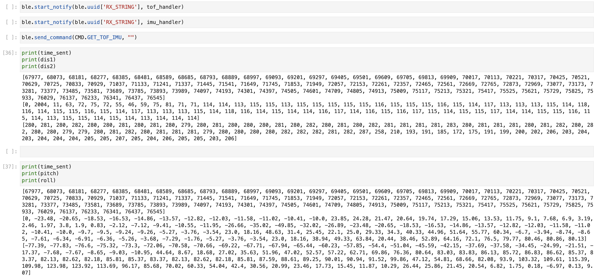
Cut the Coord!
Now, I cut the coord and integrated everything together! Instead of connecting the Artemis to my computer, I connected a 650 mAh battery to my Artemis and a 850 mAh battery to the robot to power its motor drivers. I wanted to ensure the motor drivers had the most powerful battery because of how much power it consumes in comparison to the Artemis. I also ensured that I was still able to receive bluetooth data when the power was connected.
After cutting the cord, this is what the new hardware setup looked like.
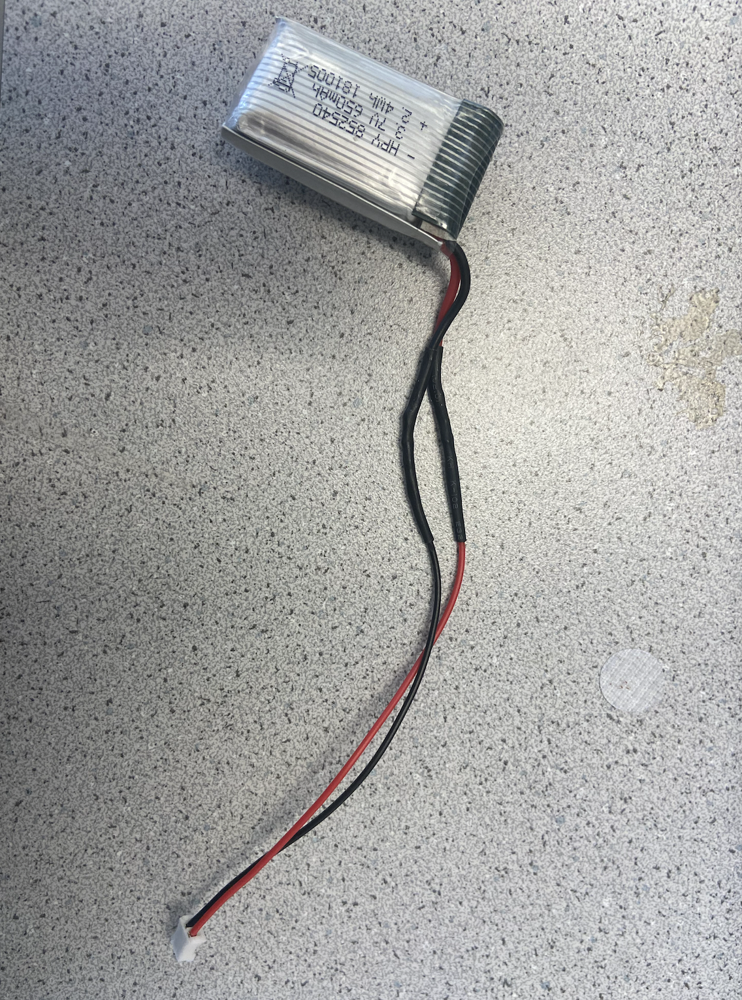
Record a Stunt!
Fast Robot in action! I finally ran the robot - it took me some time to get used to the controls but it definitely was a speedy robot.
After practing the current robot, I taped on my Artemis + sensors + battery onto the car and tried recording a stunt as well. When recording this stunt, the floors were pretty grippy leading to constant turning as seen below.